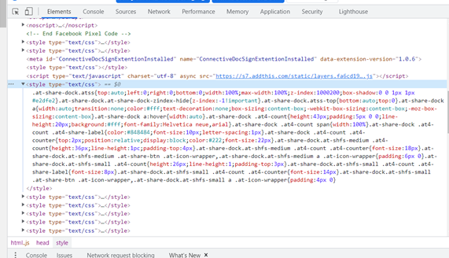
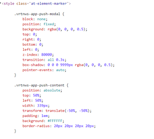
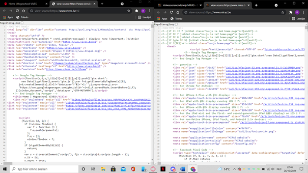
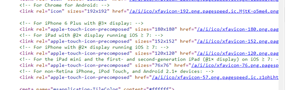
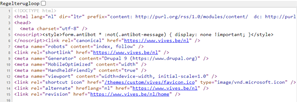
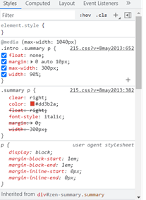
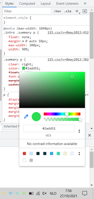
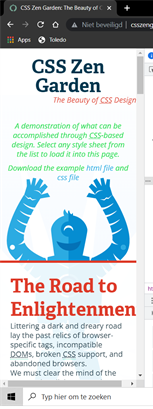
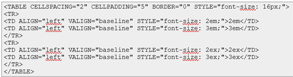

Opdracht 1
- Wat zijn de siblings van het element?
Als de ‘children’ dezelfde zijn, noemen we deze siblings, bijvoorbeeld de ‘li’ elementen in het voorbeeld van het boek. - Wat zijn de ancestors van het tweede element?
Elementen die een ‘parent(1)’ zijn van een ‘child(1)’, maar waarvan dat ‘child’ ook een ‘parent(2)’ is van een nieuw ‘child(2)’. Dan is ‘parent(1)’ de ancestor van ‘child(2)’. - Wat zijn de descendants van het element?
Bijvoorbeeld HTML is de parent van body, maar body is de parent van h1 en p, dan zijn h1 en p de descendants van HTML. Zij komen voort uit een child van de hoogste parent in de DOM-tree. - Hoeveel elementen in een geldig HTML document hebben geen parent?
1, het bovenste element volgens mij. - Heeft elk element één of meerdere child elementen?
Nee, de boom moet ergens stoppen, maar het is wel mogelijk dat er later nog een ‘child’ gevormd wordt, maar dan is dat 'child' het nieuwe einde van de DOM-tree. (bijvoorbeeld element ‘li’)
Opdracht 2
- Open je persoonlijke pagina in Chrome, bekijk de visualisatie van de DOM‐tree op het Elements tabblad en vergelijk dit met de HTML code van je pagina.
Op het elements tabblad is alles veel uitgebreider, uitklapbaar, ook is er een script bijgevoegd op het elements tabblad.
Opdracht 3
- Bekijk de onderstaande pagina's:
www.vives.be
Stijlblok voor deze site:

Inline style: geen gevonden
www.miras.be
Stijlblok voor deze site:

Inline style:

www.vrt.be
Stijlblok voor deze site: geen gevonden
Inline style:

Opdracht 4
- Open twee verschillende designs, rechtsklik en kies bij elk voor 'View page source'. Zet de twee vensters met HTML code naast elkaar op je scherm en vergewis je ervan dat de inhoud bij beiden (bijna) exact dezelfde is. Welke verschillen zie je?

 
Beide sites zorgen ervoor dat deze ook op andere apparaten op de correcte manier worden weergegeven, maar ze doen dit elk op hun eigen manier.
Zo zie je dat niet alle personen die code schrijven dezelfde methodes gebruiken.
Opdracht 5
- Probeer enkele dingen aan te passen en zie wat er gebeurt:


Wanneer ik float niet meer aanvink, dan verplaatst de tekst lichtjes naar rechts, bij margin naar links. Wanneer ik width aanpas wordt de tekst gecentreerd i.p.v rechts uitgelijnd. Wanneer ik de tekstkleur aanpas wordt de tekst natuurlijk groen
 
(Hierboven veranderen van kleur)
Opdracht 6
Opdracht 7
- Welk van beide hoofdingen wordt volgens de CSS standaard het grootst weergegeven en waarom?
2ex is kleiner, 2em is grootst. De waarde ex komt overeen met de grootte van de body van de letters van het parent element en 2ex levert daardoor een kleinere letter op dan 2em.

(Dit is wat je uitkomt wanneer je “ex” en “em” gebruikt.)